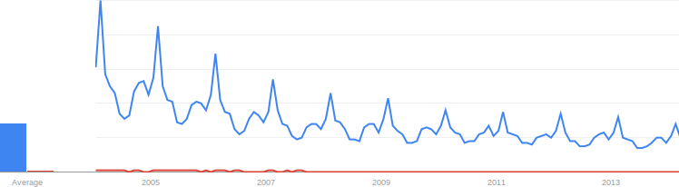
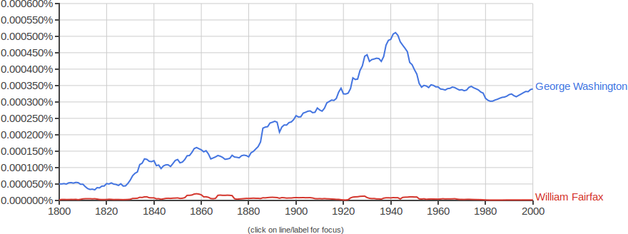

Search Engine: Part 5
We're done with our crawler! We may discover bugs down the road that'll need fixing, but for now, we're ready to move on to the last two parts of our engine.
- crawl the web, which will involve:
- receiving a seed page's URL
- downloading the contents (or _source code_) of the seed page
- getting links out of the seed page's source code
- getting keywords out of the seed page's source code
- associating the keywords with the seed page's URL and storing those associations in an index
- following all of the links from the seed page, and performing the above steps on them
- rank results as people click on them or as more pages link to them and then sort the index so that it returns the most highly-ranked results first
- return results when someone searches for a keyword
How will we rank our search results? Let's glance again at the data structure of our index.
|
index = {
"apple": [[URL, rank], [URL, rank], [URL, rank], ...],
"axis": [[URL, rank], [URL, rank], [URL, rank], ...],
"banana": [[URL, rank], [URL, rank], [URL, rank], ...],
"banquet": [[URL, rank], [URL, rank], [URL, rank], ...],
...
}
|
What is it that we want our rank to reflect? Well, it needs to be an indication both of how relevant the search results are to the search and of how popular a page is. Let's take a test case. A guy named William Fairfax is mentioned on the Wikipedia page for George Washington, but William Fairfax is a _much_ less well-known historical figure. In fact, take a look at the Google Trends graph below, which is an indication of how often people have searched for these two guys in the past fifteen or so years. (George Washington is in blue and William Fairfax is in red.)

Similarly, here's a Google Ngram Viewer chart of how often these guys' names appeared in books from the last 200 years.

Clearly, George Washington is much more popular than William Fairfax. Nevertheless, these two guys both appear on the same Wikipedia page -- a page which is probably very popular because it's about George Washington. Now, here's the big question: if someone searches for William Fairfax, then is it reasonable for us to return the George Washington Wikipedia page as one of the top results? After all, it _is_ a popular page...but it's also not highly relevant to poor William Fairfax. So what I'm really asking is this: how can we balance the rank of a particular page so that it reflects both the page's popularity and the page's relevance to a keyword? Right now, we're only using a single number to reflect a URL's rank. If a page is highly popular (as in the case of the George Washington Wikipedia page), it could potentially get returned as a top result on a relatively unrelated query (William Fairfax). It's beginning to look like we might need to represent our rank with _two_ numbers instead of one! Perhaps we need a number to represent popularity and another to represent relevance. That way, a page can be highly popular among all the various keywords, but more or less relevant to particular keywords.
Our index currently uses only a single number to represent the rank. We could consider changing the data structure of our index so that it supports two numbers, but I'm going to avoid this for two reasons. First, we said that we'd really prefer _not_ to change our data structure once it's been set, since that would also involve changing all of the functions that touch the index. Second, to calculate the popularity of a particular URL, we'd have to dig through the entire index and count the number of times that a URL appears, and then we'd have to dig through the index _again_ to update all of the popularity numbers in all of the keywords where the URL appears. Such a process would be extremely inefficient. So, instead of changing our index, I'm just going to create a second dictionary called `popularity_index`. It'll contain only URLs and their popularities, like this:
|
popularity_index = {
url: popularity,
url: popularity,
url: popularity,
...
}
|
When and how will we use this new dictionary? We'll most likely want to use it in the crawling process. Remember, we have a step in which we extract links from the source code of a page, and then we examine those links to see whether or not they need to be crawled. Perhaps we could use this examination process to bump up the popularity of the URLs that we find. So, I'm going to write a function called `uprank_popularity()` that will do just that.
|
def uprank_popularity(url):
if url in popularity_index:
popularity_index[url] += 1
else:
popularity_index[url] = 1
|
We'll call this new function during our crawling process. Here's the updated `crawl()` function.
|
def crawl(seed_page_url):
urls_to_crawl = [seed_page_url]
urls_already_crawled = []
while len(urls_to_crawl) > 0 and getsizeof(index) < 536870912:
url = urls_to_crawl[0]
source = urllib.urlopen(url).read()
keywords = get_keywords(source)
add_to_index(url, keywords)
links = get_links(source)
for link in links:
uprank_popularity(link) ### here's where we call our new function!
if link != url and link not in urls_already_crawled:
urls_to_crawl.append(link)
urls_to_crawl.remove(url)
urls_already_crawled.append(url)
|
Good. Now that we've taken care of ranking a URL's _popularity_, we now need the ability to uprank the _relevance_ of a particular URL to a particular keyword. I'm going to define a new function called `uprank_relevance()` to help us with that. We'll call it any time a user clicks on a link from the list of search results.
|
def uprank_relevance(keyword, url):
if keyword in index:
for entry in index[keyword]:
if url == entry[0]:
entry[1] += 1
|
Okay, that's it! Let's look at the entire `search.py` file.
|
import urllib
import string
from sys import getsizeof
index = {}
popularity_index = {} ### here we create our new popularity index
def get_links(source):
# stuff from part 1
def get_keywords(source):
# stuff from part 2
def add_to_index(url, keywords):
# stuff from part 3
def crawl(seed_page_url):
urls_to_crawl = [seed_page_url]
urls_already_crawled = []
while len(urls_to_crawl) > 0 and getsizeof(index) < 536870912:
url = urls_to_crawl[0]
source = urllib.urlopen(url).read()
keywords = get_keywords(source)
add_to_index(url, keywords)
links = get_links(source)
for link in links:
uprank_popularity(link)
if link != url and link not in urls_already_crawled:
urls_to_crawl.append(link)
urls_to_crawl.remove(url)
urls_already_crawled.append(url)
### here are our two new functions
def uprank_popularity(url):
if url in popularity_index:
popularity_index[url] += 1
else:
popularity_index[url] = 1
def uprank_relevance(keyword, url):
if keyword in index:
for entry in index[keyword]:
if url == entry[0]:
entry[1] += 1
|